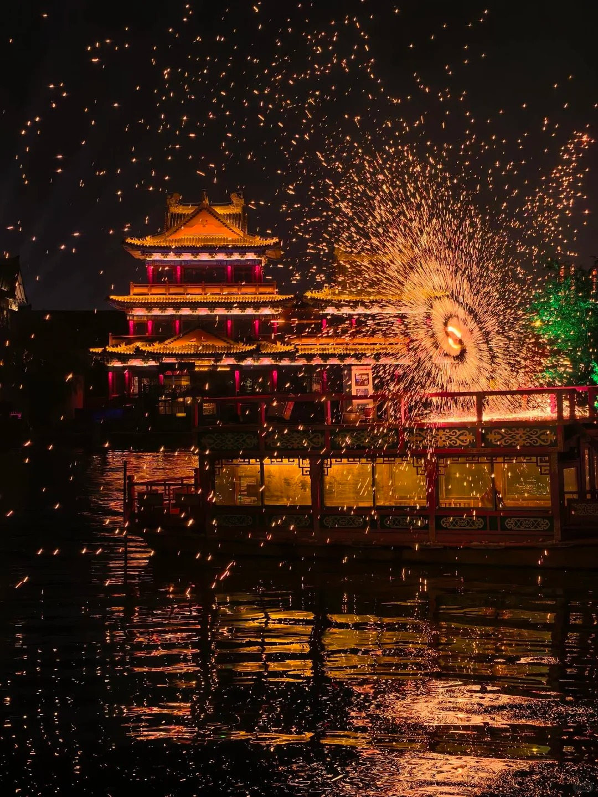

Qingming Riverside Landscape Garden
Qingming Riverside Landscape Garden is one of the most popular attractions in Kaifeng. It is a theme park inspired by a famous painting from the Song Dynasty. Visitors can explore traditional-style buildings, watch cultural performances, and experience the atmosphere of ancient China.
For more information, visit the Henan Provincial Government's English website.
